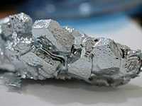

Numero atomico: 31
Massa atomica: 69,72
Temperatura di fusione (°C): 30
Temperatura di ebolizione (°C): 2204
Energia di prima ionizzazione (kj/mol): 579
Elettronegatività (secondo Pauling): 1,81
Densità: 5,91
Numeri di ossidazione: +3
Configurazione elettronica: 1s2, 2s2, 2p6, 3s2, 3p6, 3d10, 4s2, 4p1
Maggiori Informazioni